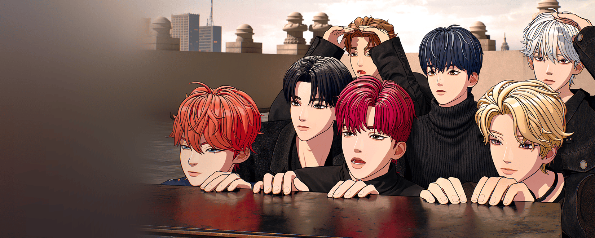

POP Live
請輸入圖片上的驗證碼後進入。

SKINZ 成員
일어나서 운동하고 정십으로 설국수 먹있...?눈물참기안니오오오옹춥다🥶새벽반젊은 올리브햄_버_거잠깐엽떼여??대청소팝🤎🦥아쉽자나!!날씨 죠아게임 어네...미안한 마음집 가는 중이었은데요 집이 아니에요🫡👨🎨안녕 킨디들임?🤤난 슬플 때 산책을 해1006힘!!!!!!!콧냥이찾으러자고싶다 ㅠ🌋🥚화창한 주말🍊오오오다도의 시간...우리도 처음인데....
目前沒有這位成員的 POP Live。